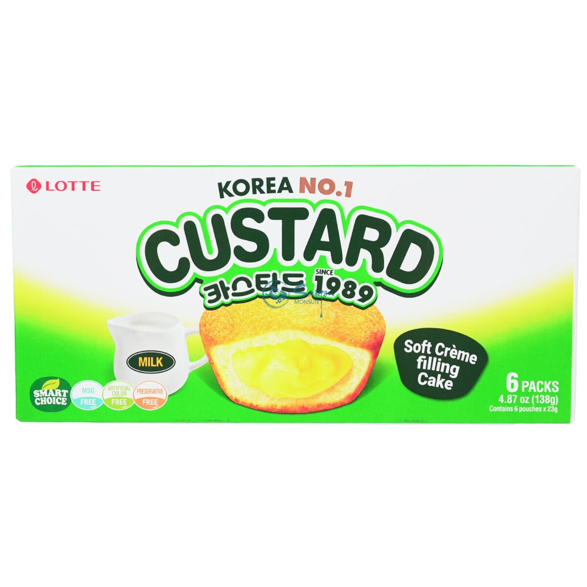
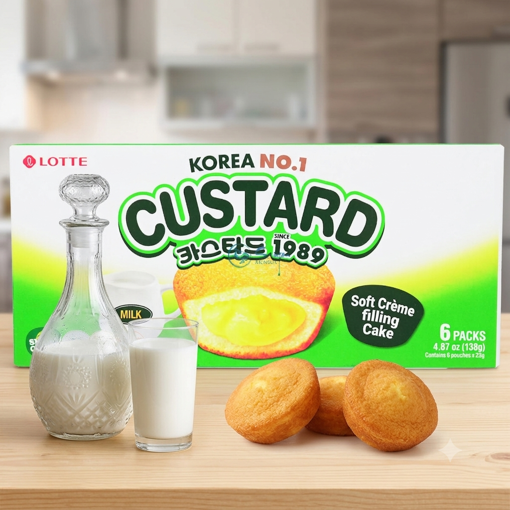

<div> <table style="border-collapse: collapse; width: 99.9809%;" border="1"><colgroup><col style="width: 49.9522%;"><col style="width: 49.9522%;"></colgroup> <tbody> <tr> <td> <div><span style="font-size: 14pt; color: #000000;"><strong>Lotte Prajiturele cu crema de vanilie, 138g</strong></span></div> <div><span style="font-size: 14pt; color: #000000;">Rasfata-te cu faimoasele prajiturele Lotte Custard, un desert clasic coreean iubit inca din 1989! Cu o textura incredibil de pufoasa si moale ca un norisor, fiecare mini-prajitura ascunde o inima bogata si cremoasa de budinca fina cu aroma de vanilie si un strop delicat de sirop de artar.</span></div> </td> <td></td> </tr> <tr> <td></td> <td><span style="font-size: 14pt; color: #000000;">O gustare dulce ideala si sofisticata! Realizate cu oua proaspete si o atentie deosebita la detalii, prajiturelele Lotte Custard iti ofera o combinatie senzationala intre pandispanul aerat si crema catifelata de vanilie. Ambalate individual, sunt perfecte pentru momentele tale zilnice de rasfat.</span></td> </tr> </tbody> </table> </div>